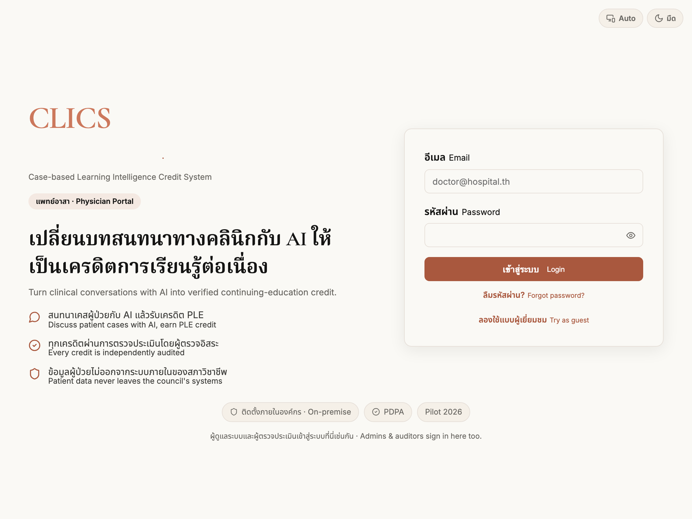
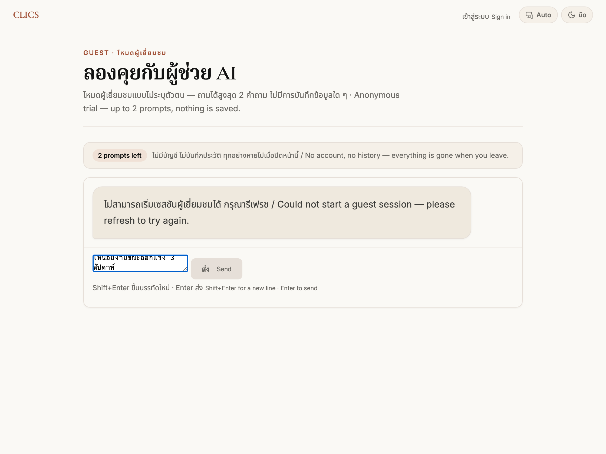

CLICS · Continuous Learning & Intelligence Credit System
คู่มือการใช้งาน
User Guide — ฉบับเริ่มต้นใช้งานสำหรับแพทย์ (ตั้งแต่เข้าสู่ระบบจนรับผล)
บทบาท: แพทย์ผู้ใช้งาน / Physician (User)
สารบัญ Contents
CLICS คืออะไร — และคุณจะได้อะไร
ภาพรวมการใช้งาน 8 ขั้นตอน
การเข้าสู่ระบบ (Login)
การลงทะเบียนครั้งแรก (เลือกสภาวิชาชีพ · สาขา · ระดับ)
การให้ความยินยอม (Consent)
หน้าหลัก / แดชบอร์ด
การเริ่มบทเรียน Professional Learning Episode (PLE) ใหม่
การสนทนากับผู้ช่วย AI
การจบและส่งประเมิน
ผลการประเมิน PIS-7 และเครดิต
เกณฑ์ PIS-7 อธิบายแบบเข้าใจง่าย
ติดตามความก้าวหน้า (LPDP)
การรับค่าตอบแทน
ทดลองก่อนสมัคร (โหมดผู้เยี่ยมชม)
คำถามที่พบบ่อยและเคล็ดลับ
ความเป็นส่วนตัว ความปลอดภัย และการติดต่อ
1 · CLICS คืออะไร — และคุณจะได้อะไร What is CLICS
CLICS คือระบบที่ให้คุณ “ฝึกการให้เหตุผลทางคลินิก” ผ่านการสนทนากับผู้ช่วย AI แล้วระบบจะประเมินคุณภาพการให้เหตุผลของคุณด้วยเกณฑ์มาตรฐาน PIS-7 (7 ด้าน) เพื่อใช้แทนการเก็บหน่วยกิตการศึกษาต่อเนื่อง (CME/CPD) แบบเข้าฟังบรรยายเดิม
การสนทนาแต่ละครั้งเรียกว่า Professional Learning Episode (PLE) หรือ “บทเรียนการเรียนรู้ต่อเนื่อง” — คุณตั้งคำถามจากเคสสมมติ (ไม่ระบุตัวผู้ป่วย) แล้วถาม–ตอบกับ AI เพื่อคิดวิเคราะห์ ทดสอบสมมติฐาน และสรุปบทเรียน
สิ่งที่คุณจะได้รับ
คะแนน PIS-7 (0–100) ในแต่ละบทเรียน · กราฟพัฒนาการของคุณ (LPDP) · เครดิต CPD เมื่อผ่านเกณฑ์ · และค่าตอบแทนตามจำนวนบทเรียนที่ทำสำเร็จในช่วงนำร่อง
ข้อสำคัญที่สุด: ใช้เฉพาะเคสที่ไม่ระบุตัวตน
ห้ามพิมพ์ชื่อ–สกุล เลขประจำตัว เลข HN หรือข้อมูลที่ระบุตัวผู้ป่วยได้ ระบบเก็บเฉพาะ “การให้เหตุผล” ของคุณเท่านั้น
2 · ภาพรวมการใช้งาน 8 ขั้นตอน The journey at a glance
1 เข้าสู่ระบบ
›
2 ให้ความยินยอม
›
3 เริ่ม PLE ใหม่
›
4 สนทนากับ AI
5 จบและส่ง
›
6 ดูผล PIS-7
›
7 ดูความก้าวหน้า
›
8 รับค่าตอบแทน
แต่ละขั้นตอนอธิบายโดยละเอียดในหัวข้อถัดไป พร้อมข้อความปุ่มจริงบนหน้าจอ
3 · การเข้าสู่ระบบ Login — physician-ui.vercel.app
เปิดเว็บ https://physician-ui.vercel.app คุณจะพบหน้าเข้าสู่ระบบ เลือกได้ 2 วิธี:
เข้าด้วยอีเมลและรหัสผ่าน — กรอกช่อง อีเมล / Email และ รหัสผ่าน / Password แล้วกดปุ่ม เข้าสู่ระบบ / Login (กดรูปดวงตาเพื่อดูรหัสผ่านที่พิมพ์)เข้าด้วยบัญชี Google — กดปุ่ม เข้าสู่ระบบด้วย Google / Sign in with Google (สำหรับผู้ที่สมัครเองด้วย Google ครั้งแรก จะมีขั้นตอนลงทะเบียนในหัวข้อ 4)ลืมรหัสผ่าน — กด ลืมรหัสผ่าน? / Forgot password? กรอกอีเมล ระบบจะส่งลิงก์ตั้งรหัสผ่านใหม่ไปให้ได้รับคำเชิญ (Invite) — หากผู้ดูแลส่งลิงก์คำเชิญมา ให้เปิดลิงก์นั้น ตั้งชื่อ–สกุลและรหัสผ่าน แล้วยืนยันรหัส 6 หลักที่ส่งไปยังอีเมล

หน้าจอเข้าสู่ระบบจริงของพอร์ทัลแพทย์ (ถ่ายจากระบบจริง)
เคล็ดลับ ผู้ดูแลระบบและผู้ตรวจประเมินก็เข้าสู่ระบบที่หน้านี้เหมือนกัน — มีเพียงประตูเข้าเดียว
4 · การลงทะเบียนครั้งแรก First-time onboarding
หากคุณสมัครด้วย Google เป็นครั้งแรก ระบบจะให้เลือกข้อมูลวิชาชีพเพื่อสร้างบัญชี:
เลือก สภาวิชาชีพ / Professional council ของคุณ
เฉพาะแพทยสภา: เลือก ระดับการฝึกอบรมสูงสุด / Highest medical training level เช่น เอกซ์เทิร์น · แพทย์อินเทิร์น · แพทย์ประจำบ้าน · แพทย์ประจำบ้านต่อยอด · อาจารย์แพทย์
เลือก ความเชี่ยวชาญ / Specialty (พิมพ์ค้นหาได้ในช่อง “ค้นหาความเชี่ยวชาญ…”)
กด ดำเนินการต่อ / Continue — ระบบพาเข้าสู่หน้าหลักโดยอัตโนมัติ
5 · การให้ความยินยอม Informed consent
เมื่อเข้าใช้งานครั้งแรก จะมีกล่องข้อความ “ก่อนเริ่ม มีสามเรื่องที่อยากให้มั่นใจ” ขึ้นมา ให้อ่านและติ๊กยืนยันให้ครบทั้ง 4 ข้อ จึงจะเริ่มใช้งานได้:
เข้าร่วมโดยสมัครใจ ถอนตัวได้ทุกเมื่อ
จะไม่กรอกข้อมูลที่ระบุตัวผู้ป่วย
เข้าใจว่าคะแนนเป็นข้อมูลวิจัย ไม่ใช้ตัดสินใบอนุญาต
ยินยอมให้ AI และผู้เชี่ยวชาญประเมินแบบไม่ระบุตัวตน
เมื่อติ๊กครบทั้ง 4 ข้อ ปุ่ม ยอมรับและเริ่มใช้งาน / I consent — let's begin จะกดได้
ทำไมต้องมีข้อนี้ เพื่อความโปร่งใส: ในระยะนำร่องคะแนนเป็น “ข้อมูลวิจัย” เพื่อปรับเทียบเครื่องมือ ยังไม่นับเป็นหน่วยกิตอย่างเป็นทางการ
6 · หน้าหลัก / แดชบอร์ด Dashboard
หลังเข้าสู่ระบบ คุณจะอยู่ที่หน้า แดชบอร์ด ซึ่งรวมทุกอย่างไว้ที่เดียว:
สวัสดี, นพ. สมชาย แพทย์อาสา / Physician · อายุรศาสตร์ · แพทย์ประจำบ้าน
เชื่อมบัญชี Google / Link Google
การใช้งาน AI / AI allowance
+ เริ่ม Professional Learning Episode ใหม่ + โฟลเดอร์ใหม่
เมนูด้านบน: หน้าหลัก / Home ความก้าวหน้า / Progress การรับเงิน / Payments ออกจากระบบ / Logout
แถบการใช้งาน AI — แสดงโควตาการใช้ AI ที่เหลือ (ระบบจำกัดงบ AI ต่อคน)แสดงสถิติ — กด แสดงสถิติ / Show stats เพื่อดูจำนวน PLE ทั้งหมด · ที่ผ่าน · คะแนนล่าสุดโฟลเดอร์ — จัดกลุ่มบทเรียนของคุณเป็นหมวดได้รายการ PLE — บทเรียนทั้งหมดพร้อมสถานะ (กำลังทำ / ผ่าน / ไม่ผ่าน / รอตรวจ)
7 · การเริ่มบทเรียน PLE ใหม่ New Professional Learning Episode
กดปุ่ม + เริ่ม Professional Learning Episode ใหม่ ที่หน้าหลัก
เลือก โฟลเดอร์ / Folder (หรือปล่อยเป็น “— ไม่จัดหมวด”)
กรอก อาการสำคัญ / Chief Complaint * เช่น “ผู้ป่วยมาด้วยเจ็บหน้าอก” (ใช้เคสสมมติ ไม่ใส่ชื่อผู้ป่วย)
กดปุ่ม เริ่มการสนทนา / Start Session ระบบจะพาเข้าสู่ห้องสนทนา
เตือนเรื่องความเป็นส่วนตัว ช่องอาการสำคัญและทุกข้อความในห้องสนทนา ต้องเป็นเคสที่ไม่ระบุตัวผู้ป่วยเท่านั้น
8 · การสนทนากับผู้ช่วย AI The chat session
ในห้องสนทนา คุณจะถาม–ตอบกับผู้ช่วย AI เพื่อคิดวิเคราะห์เคส แถบด้านบนแสดง PLE 1/3 (ลำดับบทเรียน), เวลาสนทนา, และจำนวนรอบ

ช่องพิมพ์คำถาม (composer) — ถ่ายจากโหมดทดลองจริง
ตัวอย่างบทสนทนาและสิ่งที่ AI ตอบกลับ:
ผู้ป่วยเจ็บหน้าอกเวลาออกแรง บรรเทาเมื่อพัก ควรวางแนวทาง differential อย่างไร และอะไรคือ red flags
แนวทางคือเริ่มจากความน่าจะเป็นก่อนการทดสอบ (pre-test probability) ของกลุ่มอาการหลอดเลือดหัวใจ…
Source, 2023 Guideline, 2021
คำถามชวนคิด / A question for you: อะไรในประวัติที่จะ “เพิ่ม” หรือ “ลด” ความน่าจะเป็นของ ACS ในผู้ป่วยรายนี้
การอ้างอิง (Sources) — ทุกคำตอบของ AI จะมีแหล่งอ้างอิงอย่างน้อย 1 รายการ กดเพื่อค้นหาเพิ่มเติมได้คำถามชวนคิด — บางครั้ง AI จะถามกลับเพื่อกระตุ้นให้คุณคิดต่อ (โหมด Socratic)พิมพ์ส่งข้อความ — พิมพ์ในช่อง “พิมพ์คำถามเกี่ยวกับเคส...” แล้วกด Enter (Shift+Enter ขึ้นบรรทัดใหม่)พักไว้ — กด พักไว้ / Pause เพื่อกลับมาทำต่อภายหลังความคืบหน้า — ดูมาตรวัด เวลา / รอบสนทนา / เนื้อหา เพื่อรู้ว่าใกล้ครบเกณฑ์หรือยัง
บทสนทนาที่ดีเป็นอย่างไร ถามเจาะจงกับเคส · จัดลำดับสมมติฐานพร้อมเหตุผล · ตั้งคำถามต่อยอด · ตรวจสอบคำตอบ AI · และสรุปบทเรียนด้วยคำพูดของคุณเอง (ดูเกณฑ์ PIS-7 หัวข้อ 11)
9 · การจบและส่งประเมิน End & submit
เมื่อพร้อม กดปุ่ม จบและส่ง / End ด้านบนขวา ระบบจะแสดงรายการตรวจสอบความพร้อม “จบและส่งประเมิน?” :
ระยะเวลา ≥ 10 นาที
จำนวนรอบสนทนา ≥ 4
ความลึกของบทสนทนา
เกณฑ์ด้านเนื้อหา (คำถามเชิงคลินิก, follow-up เชิงลึก, สรุปการเรียนรู้) จะถูกประเมินโดย AI ตอนส่ง
กดยืนยัน จบและส่ง / End & submit (หากยังไม่ครบเกณฑ์ จะเป็นปุ่ม ส่งทั้งที่ยังไม่ครบ / Submit anyway ) หรือกด ยังไม่จบ / Keep going เพื่อทำต่อ
ส่งแล้วทำต่อไม่ได้อีก เมื่อกดส่ง บทเรียนนี้จะปิดและเข้าสู่การประเมินทันที — กลับมาแก้ไขหรือคุยต่อไม่ได้
10 · ผลการประเมิน PIS-7 และเครดิต Your PIS-7 result
หลังส่ง ระบบจะประมวลผลสักครู่ แล้วแสดงหน้า ผลการประเมิน PIS-7 : คะแนนรวม (เต็ม 100), กราฟเรดาร์ 7 ด้าน, คะแนนรายด้านพร้อมคำอธิบาย และตรา ✓ ได้รับ CPD Credit เมื่อผ่านเกณฑ์
ในรอบทดสอบนี้ — คะแนนจะแสดงหลังการตรวจประเมิน เพื่อความเป็นกลาง คะแนน PIS-7 ของคุณจะ ยังไม่แสดงทันที — หน้าผลจะขึ้น “อยู่ระหว่างการตรวจประเมิน” และจะแสดงคะแนนเมื่อผู้ตรวจประเมินส่งคะแนนของ Episode นั้นแล้ว / In this test round your PIS-7 score is held — the page shows “under expert review” and reveals once an auditor has submitted their score.
87
คะแนน PIS-7 / 100 · ✓ ได้รับ CPD Credit
▬ คะแนนรายด้านของคุณ / Your domain scores · 0–5
กราฟเรดาร์แสดงคะแนนรายด้าน PIS-7 ทั้ง 7 ของคุณ (0–5) · ด้านล่างมีคำอธิบายเหตุผลรายด้าน และกางดูบทสนทนาทั้งหมดได้
หากไม่ผ่านเกณฑ์ขั้นต้น จะแสดงสถานะ ไม่ผ่านเกณฑ์ / Failed (Tier 1) หรือ รอตรวจสอบ / Under Review (Tier 2) พร้อมผลเกณฑ์ทั้ง 6 ข้อ (C1–C6)
11 · เกณฑ์ PIS-7 อธิบายแบบเข้าใจง่าย The PIS-7 rubric, in plain Thai
คะแนนของคุณมาจาก 7 ด้าน แต่ละด้านให้ 0–5 แล้วถ่วงน้ำหนักรวมเป็น 0–100 ด้านที่มีน้ำหนักมากที่สุดคือ “ความลึกของการให้เหตุผล”
ด้าน หมายถึง น้ำหนัก
ปัญญาในการตั้งคำถามคลินิก Clinical Question Intelligence ตั้งคำถามที่เจาะจงกับเคสและชี้จุดตัดสินใจจริง 15% ความลึกของการให้เหตุผล Reasoning Depth จัดลำดับสมมติฐานพร้อมเหตุผล ชั่งน้ำหนักความเสี่ยง–ประโยชน์ ปรับเมื่อมีข้อมูลค้าน 20% การบูรณาการบริบท Contextual Integration อายุ โรคร่วม และบริบทของผู้ป่วยมีผลต่อการตัดสินใจจริง 15% การสืบค้นแบบต่อยอด Iterative Inquiry แต่ละรอบต่อยอดจากคำตอบก่อนหน้า เจาะลึกและทดสอบ 15% การประเมินอย่างมีวิจารณญาณ Critical Appraisal ตั้งคำถามกับคำตอบ AI ขอหลักฐาน ระบุความไม่แน่นอน 15% การสังเคราะห์เชิงสะท้อนคิด Reflective Synthesis สรุปบทเรียนที่นำไปใช้ได้จริงด้วยคำพูดของคุณเอง 10% ความรู้เท่าทัน AI และทักษะการพรอมต์ AI Literacy & Prompt Skill พรอมต์ชัดเจน ตรวจสอบคำตอบ และรับผิดชอบแผนสุดท้ายในฐานะแพทย์ 10%
ระดับคะแนน: 0 ไม่พบ · 1 น้อยมาก · 2 น้อย · 3 ปานกลาง · 4 สูง · 5 สูงมาก
12 · ติดตามความก้าวหน้า (LPDP) Your progress
กดเมนู ความก้าวหน้า / Progress เพื่อดูเส้นทางคะแนน PIS-7 ของคุณตลอดการเรียนรู้ พร้อมตัวเลขคะแนนล่าสุดและแนวโน้มเทียบครั้งก่อน (▲/▼)
78 คะแนนล่าสุด / Latest · 5 PLE
▲ +5 จากครั้งก่อน
คะแนน PIS-7 ตามช่วงเวลา
13 · การรับค่าตอบแทน Payment details
กดเมนู การรับเงิน / Payments เพื่อกรอกบัญชีรับเงิน — คุณจะได้รับค่าตอบแทนตามจำนวนบทเรียนที่ทำสำเร็จในช่วงนำร่อง
ชื่อบัญชี / Account name นพ. สมชาย ใจดี
ธนาคาร / Bank เช่น ธนาคารกสิกรไทย
เลขที่บัญชี / Account number หรือ…
พร้อมเพย์ / PromptPay (phone / ID) 08x-xxx-xxxx
บันทึก / Save
ต้องกรอก “เลขที่บัญชี” หรือ “พร้อมเพย์” อย่างน้อยหนึ่งอย่าง
🔒 ปลอดภัย ข้อมูลการรับเงินถูกเข้ารหัสและเก็บไว้ภายในระบบเท่านั้น ไม่ถูกส่งไปยัง AI
14 · ทดลองก่อนสมัคร (โหมดผู้เยี่ยมชม) Guest mode
หากยังไม่มีบัญชี กด ลองใช้แบบผู้เยี่ยมชม / Try as guest ที่หน้าเข้าสู่ระบบ — คุยกับ AI ได้สูงสุด 2 คำถามแบบไม่ระบุตัวตน (ไม่บันทึกประวัติ) เพื่อสัมผัสประสบการณ์ก่อนสมัครจริง
15 · คำถามที่พบบ่อยและเคล็ดลับ FAQ & tips
ทำไมขึ้นว่า “ถึงขีดจำกัดการใช้งาน AI แล้ว”?
ระบบจำกัดงบ AI ต่อผู้ใช้เพื่อความเป็นธรรม หากใช้ครบ ให้ติดต่อผู้ดูแลระบบเพื่อขอรีเซ็ตหรือเพิ่มโควตา
บทเรียนต้องยาวแค่ไหนจึงจะผ่าน?
เกณฑ์ขั้นต้นคือ ≥ 10 นาที, ≥ 4 รอบสนทนา และมีเนื้อหาเพียงพอ จากนั้น AI จะดูคุณภาพเนื้อหา (คำถามคลินิก, follow-up, สรุปบทเรียน)
“PLE 1/3” หมายความว่าอะไร?
เป็นลำดับบทเรียนในชุดการทดลอง — บางบทจะเป็นการสนทนาแบบธรรมชาติ บางบทผู้ช่วย AI จะถามนำมากขึ้น (Socratic) เพื่อฝึกการให้เหตุผล
ทำคะแนนให้ดีขึ้น ระบุว่าอายุ/โรคร่วมของผู้ป่วยเปลี่ยนการตัดสินใจอย่างไร · อย่ารับคำตอบ AI โดยไม่ตรวจสอบ · ปิดท้ายด้วยบทเรียนที่นำไปใช้จริงด้วยคำพูดของคุณเอง (การให้ 4–5 ในด้านใด ต้องมีประโยคจากบทสนทนาที่ยกมาอ้างได้จริง)
16 · ความเป็นส่วนตัว ความปลอดภัย และการติดต่อ Privacy & support
ข้อมูลผู้ป่วยไม่เคยออกนอกระบบภายใน — มีเพียงข้อมูลที่ไม่ระบุตัวตนเท่านั้นที่ส่งให้ AI บนคลาวด์คะแนนคือข้อมูลวิจัย — ในระยะนำร่องยังไม่ใช้ตัดสินใบอนุญาตหรือการประเมินใด ๆถอนตัวได้ทุกเมื่อ — การเข้าร่วมเป็นไปโดยสมัครใจ
หากพบปัญหาการใช้งานหรือต้องการความช่วยเหลือ กรุณาติดต่อทีมผู้ดูแลโครงการนำร่อง CLICS
เอกสารนี้จัดทำสำหรับโครงการนำร่อง CLICS · เนื้อหาและข้อความปุ่มอ้างอิงจากระบบจริง ณ เวลาที่จัดทำ